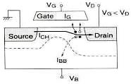
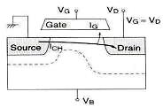
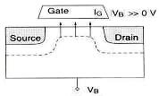
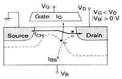

Hot Carriers
The term
'hot carriers'
refers to either holes or electrons (also referred to as
'hot
electrons')
that have gained very high kinetic energy after being accelerated by a strong
electric field in areas of high field intensities within a semiconductor
(especially MOS) device. Because of their high kinetic energy, hot carriers can get injected and trapped in areas of the
device where they shouldn't be, forming a space charge that causes the
device to degrade or become unstable. The term
'hot carrier effects',
therefore, refers to device degradation or instability caused by hot
carrier injection.
According to
the 5th Edition Hitachi Semiconductor Device Reliability Handbook, there
are four (4) commonly encountered hot carrier injection mechanisms.
These are 1) the drain
avalanche hot carrier injection; 2) the channel hot electron injection; 3)
the substrate hot electron injection; and 4)
the
secondary generated hot electron injection.
The
drain
avalanche hot carrier (DAHC)
injection
is said to produce the worst device degradation under normal operating
temperature range. This occurs when a
high voltage
applied at the drain under non-saturated conditions (VD>VG) results in
very high
electric fields near the drain, which
accelerate channel carriers into the drain's depletion region. Studies
have shown that the worst effects occur when VD
= 2VG.
The
acceleration of the channel carriers causes them to collide with Si lattice atoms, creating dislodged
electron-hole pairs in the process. This phenomenon is known as
impact ionization,
with some of the displaced e-h pairs also gaining enough energy to
overcome the
electric potential barrier between the silicon substrate and the gate
oxide.
Under the influence
of drain-to-gate field, hot carriers
that surmount the substrate-gate oxide barrier get injected into the gate oxide layer where they are sometimes trapped. This hot
carrier injection process occurs mainly in a narrow injection zone at
the drain end of the device where the lateral field is at its maximum.
Hot carriers can be trapped at the Si-SiO2 interface (hence referred to
as 'interface states') or within the oxide itself, forming a
space charge (volume charge) that increases over time as more charges
are trapped. These trapped charges shift
some of the characteristics of the device, such as its
threshold
voltage
(Vth) and its
conveyed
conductance
(gm).

Figure 1.
DAHC injection involves impact
ionization of carriers near
the drain area; source: Hitachi
Semiconductor Reliability Handbook
Injected
carriers that do not get trapped in the gate oxide become
gate current.
On the other hand, majority of the holes from the e-h pairs generated by
impact ionization flow back to the substrate, comprising a large portion
of the
substrate's drift current.
Excessive substrate current may therefore be an indication of hot
carrier degradation. In
gross cases, abnormally high substrate current can upset the balance of carrier flow and facilitate
latch-up.
Channel hot
electron (CHE) injection
occurs when
both the gate voltage and the drain voltage are significantly higher
than the source voltage, with VG≈VD. Channel carriers that travel
from the source to the drain are sometimes driven towards the gate oxide
even before they reach the drain because of the high gate voltage.

Figure 2.
CHE injection involves propelling of carriers in the
channel
toward the oxide even before they reach the drain area;
source: Hitachi Semiconductor Reliability Handbook
Substrate hot
electron (SHE) injection
occurs when
the substrate back bias is very positive or very negative, i.e.,
|VB|>>
0. Under this condition, carriers of one type in the substrate are
driven by the substrate field toward the Si-SiO2 interface. As they move
toward the substrate-oxide interface, they further gain kinetic energy
from the high field in surface depletion region. They eventually
overcome the surface energy barrier and get injected into the gate
oxide, where some of them are trapped.

Figure 3.
SHE injection involves trapping of carriers from the
substrate;
source: Hitachi Semiconductor Reliability Handbook
Secondary
generated hot electron (SGHE) injection
involves the generation of hot carriers from impact ionization involving
a secondary carrier that was likewise created by an earlier incident of
impact ionization. This occurs under
conditions similar to DAHC, i.e., the applied voltage at the drain is
high or
VD>VG,
which is
the driving condition for impact ionization. The main difference,
however, is the influence of the
substrate's back bias in the hot carrier generation.
This back bias results in a field that tends to drive the hot carriers
generated by the secondary carriers toward the surface region, where
they further gain kinetic energy to overcome the surface energy barrier.

Figure 4.
SGHE injection involves hot carriers generated by secondary
carriers;
source: Hitachi Semiconductor Reliability Handbook
Hot carrier
effects are brought about or aggravated by reductions in device
dimensions without corresponding reductions in operating voltages,
resulting in higher electric fields internal to the device. Problems due
to hot carrier injection therefore constitute a major obstacle towards
higher circuit densities. Recent studies have even shown that voltage
reduction alone will not eliminate hot carrier effects, which were
observed to manifest even at reduced drain voltages, e.g., 1.8 V.
Thus,
optimum
design
of devices to minimize, if not prevent, hot carrier effects is the best
solution for hot carrier problems. Common design techniques for
preventing hot carrier effects include: 1) increase in channel lengths;
2) n+ / n-
double
diffusion
of sources and drains; 3) use of
graded
drain junctions; 4) introduction of self-aligned n- regions between the
channel and the n+ junctions to create an
offset
gate; and 5) use of
buried
p+ channels.
Hot carrier
phenomena are
accelerated
by low temperature, mainly because this condition reduces charge
detrapping.
A simple
acceleration model for hot carrier effects is as follows:
AF = R2 / R1
AF =
e([Ea/k]
[1/T1-1/T2] + C [V2-V1])
where:
AF = acceleration
factor of the mechanism;
R1 = rate at
which the hot carrier effects occur under conditions V1 and T1;
R2 = rate at
which the hot carrier effects occur under conditions V2 and T2;
V1 and V2 =
applied voltages for R1 and R2, respectively;
T1
and T2 = applied temperatures (deg K) for R1 and R2, respectively;
Ea = -0.2 eV to
-0.06 eV;
and C = a constant.
See
Also:
Die Failures; Failure Analysis; Reliability Models
HOME
Copyright © 2004
www.EESemi.com. All Rights
Reserved.